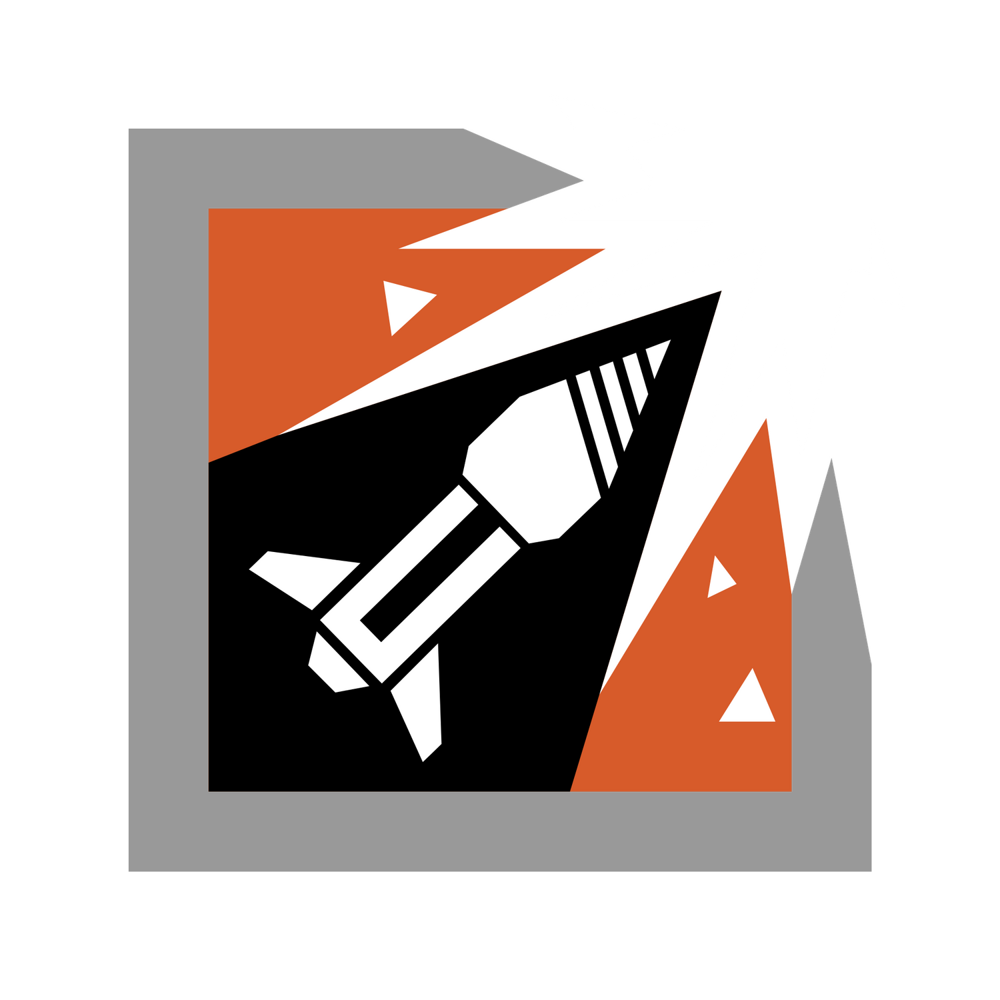
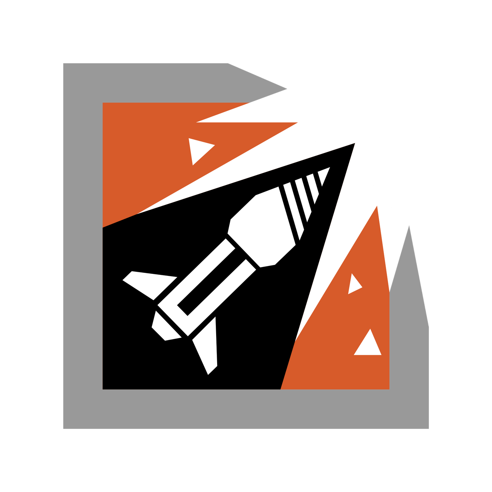

Ubisoft & R6
Ubisoft Entertainment SA (ранее Ubi Soft Entertainment) — французская компания, специализирующаяся на разработке и издании компьютерных игр, главный офис которой располагается в Монтрёй, Франция. Компания включает в себя студии в более чем в 20 странах, среди них США, Канада, Испания, Китай, Германия, Болгария, Украина, Румыния и Италия.
Tom Clancy’s Rainbow Six Siege (с англ. — «Радуга 6: Осада» — тактический шутер от первого лица, разработанный Ubisoft. Игра была анонсирована Ubisoft 9 июня 2014 года на E3 и выпущена 1 декабря 2015 года. Проект стал преемником закрытого Patriots. В геймплее сделан упор на разрушаемость окружающей обстановки и тактическое взаимодействие игроков.
На момент выхода 1 декабря 2015 года игра получила в основном одобрительные отзывы от западной прессы.Среди положительных моментов критики выделили глубокий стратегический мультиплеер, много интересных гаджетов, разнообразие игровых карт и систему разрушений. Из минусов, на момент старта игры, отмечали наличие мелких багов, технических недоработок и косметические микротранзакции.
Operators
 
